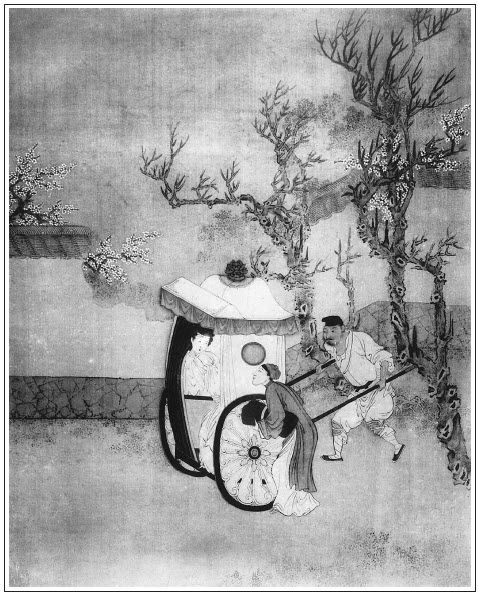

張回此回上半寫子虛之死，是正文。寫瓶兒、西門之惡，又是正文。不知其寫月娘之惡，又於旁文中帶一正文也何則？寫西門留瓶兒所寄之銀時，必無商之月娘，使賢婦相夫，正在此時。將邪正是非，天理人心，明白敷陳。西門或動念改過其惡，或不至於是也。乃食盒裝銀，牆頭遞物，主謀儘是月娘，轉遞又是月娘，又明言都送到月娘房裡去了。則月娘為人，乃《金瓶梅》中第一綿裡裹針柔奸之人。作者卻用隱隱之筆寫出來，令人不覺也。何則？夫月娘倘知瓶兒、西門偷期之事，而今又收其寄物，是幫西門一夥做賊也。夫既一夥做賊，乃後子虛既死，瓶兒欲來，月娘忽以許多正言不許其來，然則西門利其色，月娘則乘機利其財矣。月娘之罪，又何可逭？倘不知兩人偷期之事，則花家婦人私房，欲寄於西門氏家，此何故也？乃月娘主謀，動手騙入房中。子虛尚未死，瓶兒安必其來？主意不賴其寄物，後日必還，則月娘與瓶兒，何親何故，何恩何德，乃為之擔一把干係，收藏其私房哉？使有心俊俟瓶兒之來，則其心愈不可問矣。況後文阻娶瓶兒，乃云「與他丈夫相與」，然則月娘此時之意，蓋明安一白騙之心，後直不欲瓶兒再題一字，再見瓶兒一面，故瓶兒進門，月娘含憤，以及竹山受氣之時，西門與月娘雖有間意，而並未一言，乃寫月娘直至不與西門交言，是月娘固自有心事，恐寄物見主也。利其財，且即不肯買其房，總之欲得此一宗白財，再不許題原主一字。月娘之惡，寫得令人髮指。固知後敬濟、吳典恩之報，真絲毫不爽，乃其應得者耳。
下半寫瓶兒欲嫁之情。夫金蓮之來，乃有玉樓一間，瓶兒之來，作者乃不肯令其一間兩間即來，與寫金蓮之筆相犯也。夫不肯一間兩間即來，乃用何者作許多間隔之筆哉？故先用瓶兒來作一間，更即以來作未來之間筆，其用意之妙為何如。下回又以月娘等之去作一間，又用桂姐處作一間，文情至此，蕩漾已盡。下回可以收轉瓶兒至家矣，看他偏寫敬濟入來，橫插一筍，且生出陳洪一事，便使瓶兒一人，自第一回內熱突突寫來，一路花團錦簇，忽然冰消瓦解，風馳電卷，杳然而去，嫁一竹山。令看者不復知西門、瓶兒尚有一面之緣。乃後忽插張勝，即一筆收轉，瓶兒已在西門慶家。其用筆之妙，起伏頓挫之法，吾滿口生花，亦不得道其萬一也。
詩曰：
眼意心期未即休，不堪拈弄玉搔頭。
春回笑臉花含媚，黛蹙娥眉柳帶愁。
粉暈桃腮思伉儷，寒生蘭室盼綢繆。
何如得遂相如意，不讓文君詠白頭。

話說一日吳月娘心中不快，吳大妗子來看，月娘留他住兩日。正陪在房中坐的，忽見小廝玳安抱進氈包來，說：「爹來家了。」吳大妗子便往李嬌兒房裡去了。
西門慶進來，脫了衣服坐下。小玉拿茶來也不吃。月娘見他面色改常，便問：「你今日會茶，張夾卻於月娘口中，先出會茶。來家恁早？」西門慶道：「今該常二哥會，他家沒地方，請俺們在城外永福寺去耍子。張夾又是永福寺。有花二哥邀了應二哥，張眉子虛先結果永福寺。俺們四五個，往院裡鄭愛香兒家吃酒。正吃著，忽見幾個做公的進來，不由分說，把花二哥拿的去了。把眾人嚇了一驚。我便走到李桂姐躲了半日，不放心，使人打聽。原來是花二哥內臣家房族中告家財，在東京開封府遞了狀子，批下來，著落本縣拿人。俺們才放心，張夾好兄弟寫盡。各人散歸家來。」月娘聞言，便道：「這是正該的，你整日跟著這夥人，不著個家，只在外邊胡撞；今日只當丟出事來，才是個了手。你如今還不心死。到明日不吃人掙鋒廝打，群到那日是個爛羊頭，你肯斷絕了這條路兒！張夾規勸處並無敬重之意，所以不能動人。正經家裡老婆的言語說著你肯聽？只是院裡淫婦在你跟前說句話兒，你到著個驢耳朵聽他。張夾此言是對著丈夫說者乎？寫月娘不知禮處，純用隱筆寫西門也。正是：『家人說著耳邊風，外人說著金字經』。」西門慶笑道：「誰人敢七個頭八個膽打我！」繡旁口角肖甚。張夾只如此答之，所以不能教月娘也。月娘道：「你這行貨子，只好家裡嘴頭子罷了。」
正說著，只見玳安走來說：「隔壁花二娘使天福兒來，請爹過去說話。」這西門慶聽了，趔趄腳兒就往外走。月娘道：「明日沒的教人講你把。」西門慶道：「切鄰間不防事。我去到那裡，看他有甚麼話說。」當下走過花子虛家來，李瓶兒使小廝請到後邊說話，只見婦人羅衫不整，粉面慵妝，從房裡出來，臉嚇的蠟渣也似黃，跪著西門慶，再三哀告道：「大官人沒奈何，不看僧面看佛面，繡眉以佛面自許，妙甚。皆映帶瓶兒醇厚處。常言道：家有患難，鄰里相助。因他不聽人言，把著正經家事兒不理，只在外邊胡行。今日吃人暗算，弄出這等事來。這時節方對小廝說將來，教我尋人情救他。我一個婦人家沒腳的，那裡尋那人情去。發狠起來，想著他恁不依說，拿到東京，打的他爛爛的，也不虧他。繡眉恨中作轉想，全不念及夫妻，子虛危矣。只是難為過世老公公的姓字。奴沒奈何，請將大官人過來，央及大官人，把他不要提起罷，千萬看奴薄面，有人情好歹尋一個兒，只不教他吃凌逼便了。」西門慶見婦人下禮，連忙道：「嫂子請起來，不妨，我還不知為了甚勾當。」婦人道：「正是一言難盡。俺過世老公公有四個侄兒，大侄兒喚做花子由，第三個喚花子光，第四個叫花子華，俺這個名花子虛，都是老公公嫡親的。雖然老公公掙下這一分錢財，見我這個兒不成器，從廣南回來，把東西只交付與我手裡收著。著緊還打倘棍兒，那三個越發打的不敢上前。去年老公公死了，這花大、花三、花四，也分了些床帳傢伙去了，只現一分銀子兒沒曾分得。我常說，多少與他些也罷了，他通不理一理兒。今日手暗不通風，卻教人弄下來了。」說畢，放聲大哭。西門慶道：「嫂子放心，我只道是甚麼事來，原來是房分中告家財事，這個不打緊。既是嫂子吩咐，哥的事就是我的事一般，隨問怎的，我在下謹領。」婦人說道：「官人若肯時又好了。請問尋分上，要用多少禮兒，奴好預備。」西門慶道：「也用不多，聞得東京開封府楊府尹，乃蔡太師門生。蔡太師與我這四門親家楊提督，都是當朝天子面前說得話的人。張夾只此一語，敬濟已該死無葬地矣。拿兩個分上，齊對楊府尹說，有個不依的！不拘多大事情也了了。如今倒是蔡太師用些禮物。那提督楊爺與我舍下有親，他肯受禮？」婦人便往房中開箱子，搬出六十錠大元寶，共計三千兩，教西門慶收去尋人情，上下使用。西門慶道：「只一半足矣，何消用得許多！」婦人道：「多的大官人收了去。奴床後還有四箱櫃蟒衣玉帶，帽頂絛環，都是值錢珍寶之物，亦發大官人替我收去，放在大官人那裡，奴用時來取。繡眉世上許多不顧名義者，皆此一念壞之，不獨一瓶兒也。張夾其意何居？趁這時，奴不思個防身之計，信著他，往後過不出好日子來。眼見得三拳敵不得四手，到明日，沒的把這些東西兒吃人暗算了去，坑閃得奴三不歸！」張夾可殺私自。西門慶道：「只怕花二哥來家尋問怎了？」婦人道：「這都是老公公在時，梯己交與奴收著之物，他一字不知。大官人只顧收去。」西門慶說道：「既是嫂子恁說，我到家教人來取。」於是一直來家，與月娘商議。月娘說：「銀子便用食盒叫小廝抬來。那箱籠東西，若從大門裡來，教兩邊街坊看著不惹眼？必須夜晚打牆上過來張夾牆，十二。方隱密些。」張夾大書月娘之惡，教其夫為狗彘之行，其禍已為子虛釀成，乃阻其娶，是使之為賊，而後數之也。西門慶聽言大喜，即令玳安、來旺、來興、平安四個小廝，兩架食盒，把三千兩銀子先抬來家。然後到晚夕月上時分，李瓶兒那邊同迎春、繡春放桌凳，把箱櫃挨到牆上。張夾牆，十三。西門慶這邊，止是月娘、金蓮、春梅，用梯子接著。牆頭上鋪襯氈條，一個個打發過來，都送到月娘房中去了。正是：
富貴自是福來投，利名還有利名憂。
命裡有時終須有，命裡無時莫強求。
西門慶收下他許多細軟金銀寶物，鄰舍街坊俱不知道。連夜打點馱裝停當，求了他親家陳宅一封書，差家人來保上東京。送上楊提督書禮，轉求內閣蔡太師柬帖下與開封府楊府尹。這府尹名喚楊時，別號龜山，張夾不料龜山，亦入此書中。乃陝西弘農縣人氏，由癸未進士升大理寺卿，今推開封府尹，極是清廉。況蔡太師是他舊時座主，楊戩又是當道時臣，如何不做分上！繡眉以龜山一清廉猶聽分上，況其他乎！然此等分上，亦不必不聽。張夾龜山且如此，而況他乎！此非作者故詆龜山，甚言污濁之世，群子每為小人所愚也。當日楊府尹升廳，監中提出花子虛來，一干人上廳跪下，審問他家財下落。此時花子虛已有西門慶捎書知會了，口口只說：「自從老公公死了，發送唸經，都花費了。止有宅舍兩所、莊田一處見在，其餘床帳家火物件，俱被族人分散一空。」楊府尹道：「你們內官家財，無可稽考，得之易，失之易。張夾西門豈非得之更易乎？韓道國等候多時矣。既是花費無存，批仰清河縣委官將花太監住宅二所、莊田一處，估價變賣，分給花子由等三人回繳。」花子由等又上前跪稟，還要監追子虛，要別項銀兩。被楊府尹大怒，都喝下來，說道：「你這廝少打！當初你那內相一死之時，你每不告做甚麼來？如今事情已往，又來騷擾。」於是把花子虛一下兒也沒打，批了一道公文，押發清河縣前來估計莊宅，不在話下。
來保打聽這消息，星夜回來，報知西門慶。西門慶聽見分上准了，放出花子虛來家，滿心歡喜。這裡李瓶兒請過西門慶去計議，要叫西門慶拿幾兩銀子，買了這所住的宅子：「到明日，奴不久也是你的人了。」繡旁已先拿定，怕人。張旁送過元寶箱籠為此。西門慶歸家與吳月娘商議。張旁又與月娘商議。月娘道：「你若要他這房子，恐怕他漢子一時生起疑心來，怎了？」張旁寫月娘惡便有百二十分。西門慶聽記在心。
那消幾日，花子虛來家，清河縣委下樂縣丞丈估：太監大宅一所，坐落大街安慶坊，值銀七百兩，賣與王皇親為業；南門外莊田一處，值銀六百五十兩，賣與守備周秀為業。止有住居小宅，值銀五百四十兩，因在西門慶緊隔壁，沒人敢買。花子虛再三使人來說，西門慶只推沒銀子，不肯上帳。縣中緊等要回文書，李瓶兒急了，暗暗使馮媽媽來對西門慶說，教拿他寄放的銀子兌五百四十兩買了罷。這西門慶方才依允。當官交兌了銀兩，花子由都畫了字。連夜做文書回了上司，共該銀一千八百九十五兩，三人均分訖。
花子虛打了一場官司出來，沒分的絲毫，把銀兩、房舍、莊田又沒了，兩箱內三千兩大元寶又不見蹤影，心中甚是焦躁。因問李瓶兒查算西門慶使用銀兩下落，今還剩多少，好湊著買房子。反吃婦人整罵了四五日，罵道：「呸！魎魎混沌，繡旁罵得當。你成日放著正事兒不理，在外邊眠花臥柳，只當被人弄成圈套，拿在牢裡，使將人來教我尋人情。奴是個女婦人家，大門邊兒也沒走，曉得甚麼？認得何人？那裡尋人情？渾身是鐵打得多少釘兒？替你添羞臉，到處求爹爹告奶奶。多虧了隔壁西門大官人，繡眉慢慢說到西門慶身上，一些不露相，妙甚。看日前相交之情，大冷天，刮得那黃風黑風，使了家下人往東京去，替你把事兒幹得停停噹噹的。你今日了畢官司，兩腳站在平川地，得命思財，瘡好忘痛，來家到問老婆找起後帳兒來了，還說有也沒有。你寫來的帖子現在，沒你的手字兒，我擅自拿出你的銀子尋人情，抵盜與人便難了！繡旁虛心病，偏有膽說破，妙甚。繡眉在花子虛跟前，便有許多饒舌，蓋拿定子虛無可奈何故耳。張旁一路寫瓶兒，非全不能言者，後殆為金蓮所制耳。」花子虛道：「可知是我的帖子來說，繡旁膿皰口角。實指望還剩下些，咱湊著買房子過日子。」婦人道：「呸！濁蠢才！我不好罵你的。你早仔細好來，和頭兒上不算計，圈底兒下卻算計。千也說使多了，萬也說使多了，你那三千兩銀子能到的那裡？蔡太師、楊提督好小食腸兒！不是恁大人情，平白拿了你一場，當官蒿條兒也沒曾打在你這忘八身上，好好兒放出來，教你在家裡恁說嘴！人家不屬你管轄，你是他甚麼著疼的親？平白怎替你南上北下走跳，使錢教你！你來家也該擺席酒兒，請過人來，知謝人一知謝兒，還一掃帚掃得人光光的，到問人找起後帳兒來了！」幾句連搽帶罵，罵的子虛閉口無言。
到次日，西門慶使玳安送了一分禮來與子虛壓驚。子虛這裡安排了一席，請西門慶來知謝，就要問他銀兩下落。依著西門慶，還要找過幾百兩銀子與他湊買房子。到是李瓶兒不肯，繡旁太甚。張旁死孽之由。暗地使馮媽媽過來對西門慶說：「休要來吃酒，張夾寫心虛處。只開送一篇花帳與他，說銀子上下打點都使沒了。」花子虛不識時，還使小廝再三邀請。西門慶躲的一徑往院裡去了，只回不在家。花子虛氣的發昏，只是跌腳。看觀聽說：大凡婦人更變，不與男子漢一心，隨你咬折鐵釘般剛毅之夫，也難測其暗地之事。自古男治外而女治內，往往男子之名都被婦人壞了者為何？皆由御之不得其道。要之在乎容德相感，緣分相投，夫唱婦隨，庶可保其無咎。若似花子虛落魄飄風，謾無紀律，而欲其內人不生他意，豈可得乎！正是：
自意得其墊，無風可動搖。
話休饒舌。後來子虛只擯湊了二百五十兩銀子，買了獅子街一所房屋居住。得了這口重氣，剛搬到那裡，又不幸害了一場傷寒，從十一月初旬，睡倒在床上，就不曾起來。初時還請太醫來看，後來怕使錢，只挨著。張夾浮華子弟下場頭。一日兩，兩日三，挨到二十頭，嗚呼哀哉，斷氣身亡，亡年二十四歲。繡眉浪子下場頭，往往如此。那手下的大小廝天喜兒，從子虛病倒之時，就拐了五兩銀子走的無蹤。子虛一倒了頭，李瓶兒就使馮媽媽請了西門慶過去，與他商議買棺入殮，唸經發送，到墳上安葬。那花大、花三、花四一般兒男婦，也都來弔孝送殯。繡旁伏。張夾可笑。西門慶那日也教吳月娘辦了一張桌席，與他山頭祭奠。當日婦人轎子歸家，也設了一個靈位，供養在房中。張旁一連三個「也」字，冷落殺人。雖是守靈，一心只想著西門慶。從子虛在日，就把兩個丫頭教西門慶耍了，子虛死後，越發通家往還。
一日，正值正月初九，李瓶兒打聽是潘金蓮生日，未曾過子虛五七，李瓶兒就買禮物坐轎子，穿白綾襖兒，藍織金裙，白紵布䯼髻，珠子箍兒，來張夾一裝束，該死。與金蓮做生日。馮媽媽抱氈包，天福兒跟轎。進門先與月娘磕了四個頭，說道：張夾只一拜見磕頭，瓶兒居然以妾自待矣。月娘主也，瓶兒客也，今云「先磕了四個頭」，下見金蓮，「兩個還平磕了頭」，一時禮數參錯？心事帶邪。如畫，如鏡。「前日山頭多勞動大娘受餓，又多謝重禮。」拜了月娘，又請李嬌兒、孟玉樓拜見了。然後潘金蓮來到，說道：「這位就是五娘？」繡旁寫出神交之久。又要磕下頭去，一口一聲稱呼：「姐姐，繡旁應前。請受奴一禮兒。」金蓮那裡肯受，相讓了半日，兩個還平磕了頭。金蓮又謝了他壽禮。又有吳大妗子、潘姥姥一同見了。繡眉拜見先後輕重節次，字字有心，直從太史公筆法化來。李瓶兒便請西門慶拜見。月娘道：「他今日往門外玉皇廟打醮去了。」一面讓坐了，喚茶來吃了。良久，只見孫雪娥走過來。李瓶兒見他妝飾少次於眾人，張夾寫出勢利。便起身來問道：「此位是何人？奴不知，不曾請見得。」月娘道：「此是他姑娘哩。」李瓶兒就要行禮。月娘道：「不勞起動二娘，只是平拜拜兒罷。」於是彼此拜畢，月娘就讓到房中，換了衣裳，吩咐丫鬟，明間內放桌兒擺茶。須臾，圍爐添炭，酒泛羊羔，安排上酒來。讓吳大妗子、潘姥姥、李瓶兒上坐，月娘和李嬌兒主席，孟玉樓和潘金蓮打橫。孫雪娥回廚下照管，不敢久坐。
月娘見李瓶兒鍾鍾酒都不辭，於是親自遞了一遍酒，又令李嬌兒眾人各遞酒一遍，因嘲問他話兒道：「花二娘搬的遠了，俺姊妹們離多會少，好不思想。二娘狠心，就不說來看俺們看見？」孟玉樓便道：「二娘今日不是因與六姐做生日，還不來哩！」張夾一語刺人。李瓶兒道：「好大娘，三娘，蒙眾娘抬舉，繡旁不敢惡識一個。奴心裡也要來，一者熱孝在身，二者家下沒人。昨日才過了他五七，不是怕五娘怪，還不敢來。」因問：「大娘貴降在幾時？」月娘道：「賤日早哩。」潘金蓮接過來道：「大娘生日是八月十五，二娘好歹來走走。」張旁後月娘生日，瓶兒送禮，復議嫁來，則此處一筆直透後文矣。李瓶兒道：「不消說，一定都來。」孟玉樓道：「二娘今日與俺姊妹相伴一夜兒，不往家去罷了。」李瓶兒道：「奴可知也要和眾位娘敘些話兒。不瞞眾位娘說，小家兒人家，初搬到那裡，自從他沒了，家下沒人，奴那房子後牆緊靠著喬皇親花園，好不空！繡旁伏。晚夕常有狐狸拋磚掠瓦，張旁子虛在此。奴又害怕。原是兩個小廝，那個大小廝又走了，止是這個天福兒小廝看守前門，後半截通空落落的。倒虧了這個老馮，是奴舊時人，常來與奴漿洗些衣裳。」月娘因問：「老馮多少年紀？且是好個恩實媽媽兒，高大言也沒句兒。」李瓶兒道：「他今年五十六歲，男花女花都沒，只靠說媒度日。我這裡常管他些衣裳。昨日拙夫死了，叫過他來與奴做伴兒，晚夕同丫頭一炕睡。」潘金蓮嘴快，說道：「既有老馮在家裡看家，二娘在這裡過一夜也不妨，左右你花爹沒了，有誰管著你！」繡旁尖。玉樓道：「二娘只依我，叫老馮回了轎子，不去罷。」那李瓶兒只是笑，不做聲。繡旁心事可想。話說中間，酒過數巡。潘姥姥先起身往前邊去了。潘金蓮隨跟著他娘往房裡去了。李瓶兒再三辭道：「奴的酒夠了。」李嬌兒道：「花二娘怎的，在他大娘、三娘手裡肯吃酒，偏我遞酒，二娘不肯吃？顯的有厚薄。」遂拿個大杯斟上。李瓶兒道：「好二娘，奴委的吃不去了，豈敢做假！」月娘道：「二娘，你吃過此杯，略歇歇兒罷。」那李瓶兒方才接了，放在面前，只顧與眾人說話。孟玉樓見春梅立在旁邊，便問春梅：「你娘在前邊做甚麼哩？繡眉已沒得說，又別生枝。你去連你娘、潘姥姥快請來，就說大娘請來陪你花二娘吃酒哩。」春梅去不多時，回來道：「姥姥害身上疼，睡哩。俺娘在房裡勻臉，就來。」月娘道：「我倒也沒見，他倒是個主人家，把客人丟了，三不知往房裡去了。諸般都好，只是有這些孩子氣。」繡眉妒之若怪，愛之最嫣。有詩為證：
倦來汗濕羅衣徹，樓上人扶上玉梯。
歸到院中重洗面，金盆水裡發紅泥。
正說著，只見潘金蓮走來。玉樓在席上看見他艷抹濃妝，從外邊搖擺將來，戲道：「五丫頭，你好人兒！今日是你個驢馬畜，把客人丟在這裡，你躲到房裡去了，你可成人養的！」那金蓮笑嘻嘻向他身上打了一下。繡旁媚致可想。張夾淫態。玉樓道：「好大膽的五丫頭！你還來遞一鍾兒。」李瓶兒道：「奴在三娘手裡吃了好少酒兒，也都夠了。」金蓮道：「他手裡是他手裡帳，我也敢奉二娘一鍾兒。」於是滿斟一大鐘遞與李瓶兒。李瓶兒只顧放著不肯吃。月娘因看見金蓮鬢上撇著一根金壽字簪兒，便問：「二娘，你與六姐這對壽字簪兒，是那裡打造的？倒好樣兒。到明日俺每人照樣也配恁一對兒戴。」張旁寫月娘貪瓶兒之財處，一絲不放空，直與後鎖門，爭皮襖一氣呼吸。李瓶兒道：「大娘既要，奴還有幾對，到明日每位娘都補奉上一對兒。此是過世老公公御前帶出來的，外邊那裡有這樣範！」月娘道：「奴取笑斗二娘耍子。俺姐妹們人多，那裡有這些相送！」眾女眷飲酒歡笑。
看看日西時分，馮媽媽在後邊雪娥房裡管待酒，吃的臉紅紅的出來，催逼李瓶兒道：「起身不起身？好打發轎子回去。」月娘道：「二娘不去罷，叫老馮回了轎子家去罷。」李瓶兒說：「家裡無人，改日再奉看眾位娘，有日子住哩。」孟玉樓道：「二娘好執古，俺眾人就沒些兒分上？如今不打發轎子，等住回他爹來，少不的也要留二娘。」繡眉玉樓亦有此毒語，然而隱隱湊趣。自這說話，逼迫的李瓶兒就把房門鑰匙遞與馮媽媽，說道：「既是他眾位娘再三留我，顯的奴不識敬重。吩咐轎子回去，教他明日來接罷。你和小廝家去，仔細門戶。」又教馮媽媽附耳低言：「教大丫頭迎春，拿鑰匙開我床房裡頭一個箱子，小描金頭面匣兒裡，拿四對金壽字簪兒。你明日早送來，我要送四位娘。」那馮媽媽得了話，拜辭了月娘，一面出門，不在話下。
少頃，李瓶兒不肯吃酒，月娘請到上房，同大妗子一處喫茶坐的。忽見玳安抱進氈包，西門慶來家，掀開簾子進來，說道：「花二娘在這裡！」慌的李瓶兒跳起身來，兩個見了禮，坐下。月娘叫玉簫與西門慶接了衣裳。西門慶便對吳大妗子、李瓶兒說道：「今日門外玉皇廟聖誕打醮，該我年例做會首，與眾人在吳道官房裡算帳。七擔八柳纏到這咱晚。」因問：「二娘今日不家去罷了？」玉樓道：「二娘再三不肯，要去，被俺眾姐妹強著留下。」李瓶兒道：「家裡沒人，奴不放心。」西門慶道：「沒的扯淡，張夾便非舊時稱謂聲口。這兩日好不巡夜的甚緊，怕怎的！但有些風吹草動，拿我個帖兒送與周大人，點到奉行。」又道：「二娘怎的冷清清坐著？繡旁開端妙。繡眉分明一句閒話，又及時又攤眼。說來妙不容言。用了些酒兒不曾？」孟玉樓道：「俺眾人再三勸二娘，二娘只是推不肯吃。」西門慶道：「你們不濟，等我勸二娘。二娘好小量兒！」繡旁插入無痕。張夾映出舊事。李瓶兒口裡雖說：「奴吃不去了。」只不動身。一面吩咐丫鬟，從新房中放桌兒，都是留下伺候西門慶的嗄飯菜蔬、細巧果仁，擺了一張桌子。吳大妗子知局，推不用酒，因往李嬌兒房裡去了。繡旁打發得乾淨。張夾寫瓶兒不堪。當下李瓶兒上坐，西門慶關席，吳月娘在炕上跐著爐壺兒。繡旁錯綜得妙。張夾言其近炕放桌也，近坑則房裡矣。寫瓶兒不堪之甚也。孟玉樓、潘金蓮兩邊打橫。五人坐定，把酒來斟，也不用小鍾兒，都是大銀衢花鍾子，你一杯，我一盞。常言：風流茶說合，酒是色媒人。吃來吃去，吃的婦人眉黛低橫，秋波斜視。繡眉一低字，一斜字，寫出女人醉態。正是：
兩朵桃花上臉來，眉眼施開真色相。
月娘見他二人吃得餳成一塊，言頗涉邪，看不上，繡眉飲酒中不序一語，只用「餳成一塊」十一字包括，而當時嬉笑狎暱情景宛然。人知其煩，而不知其簡之妙如此。往那邊房裡陪吳大妗子坐去了，張夾寫的不堪之甚。由著他四個吃到三更時分。李瓶兒星眼乜斜，立身不住，拉金蓮往後邊淨手。西門慶走到月娘房裡，亦東倒西歪，問月娘打發他那裡歇。月娘道：「他來與那個做生日，就在那個房兒裡歇。」西門慶道：「我在那裡歇？」繡旁緊接，妙。張夾寫的不堪之甚。月娘道：「隨你那裡歇，再不你也跟了他一處去歇罷。」張夾不堪。西門慶忍不住笑道：「豈有此理！」因叫小玉來脫衣：「我在這房裡睡了。」繡旁扯白得妙。月娘道：「就別要汗邪，張夾豈賢婦人對夫聲口。休要惹我那沒好口的罵出來！你在這裡，他大妗子那裡歇？」西門慶道：「罷，罷！繡眉「罷，罷」不得已死心之辭也。至此方死心，不知心先想著何處？我往孟三兒房裡歇去罷。」於是往玉樓房中歇了。
潘金蓮引著李瓶兒淨了手，同往他前邊來，就和姥姥一處歇臥。張夾寫金蓮冷瓶兒，妙甚。到次日起來，臨鏡梳妝，春梅伏侍。他因見春梅靈變，知是西門慶用過的丫頭，與了他一副金三事兒。繡眉處處收拾人心，瓶兒亦自不俗。那春梅連忙就對金蓮說了。張夾寫春梅。金蓮謝了又謝，張夾寫一群婦人，均是利瓶兒之財。說道：「又勞二娘賞賜他。」李瓶兒道：「不枉了五娘有福，好個姐姐！」梳妝畢，金蓮領著他同潘姥姥，叫春梅開了花園門，各處游看。李瓶兒看見他那邊牆頭開了個便門，張夾牆又一照，「牆」字終。通著他那壁，便問：「西門爹幾時起蓋這房子？」張夾心事。金蓮道：「前者陰陽看來，說到這二月間興工動土，張夾又出蓋房。要把二娘那房子打開，通做一處，前面蓋山子卷棚，展一個大花園；後面還蓋三間玩花樓，與奴這三間樓做一條邊。」這李瓶兒聽了在心。只見月娘使了小玉來請後邊喫茶。三人同來到上房。吳月娘、李嬌兒、孟玉樓陪著吳大妗子，擺下茶等著哩。眾人正吃點心，只見馮媽媽進來，向袖中取出一方舊汗巾，包著四對金壽字簪兒，遞與李瓶兒。李瓶兒先奉了一對與月娘，然後李嬌兒、孟玉樓、孫雪娥每人都是一對。月娘道：「多有破費二娘，這個卻使不得。」李瓶兒笑道：「好大娘，甚麼稀罕之物，胡亂與娘們賞人便了。」月娘眾人拜謝了，方才各人插在頭上。月娘道：「聞說二娘家門首就是燈市，好不熱鬧。到明日我們看燈，就往二娘府上望望，休要推不在家。」李瓶兒道：「奴到那日，奉請眾位娘。」金蓮道：「姐姐還不知，奴打聽來，這十五日是二娘生日。」月娘道：「今日說過，若是二娘貴降的日子，俺姊妹一個也不少，來與二娘祝壽。」李瓶兒笑道：「蝸居小室，娘們肯下降，奴一定奉請。」不一時吃罷早飯，擺上酒來飲酒。看看留連到日西時分，轎子來接，李瓶兒告辭歸家。眾姐妹款留不住。臨出門，請西門慶拜見。月娘道：「他今日早起身，出門與人家送行去了。」婦人千恩萬謝，方才上轎來家。正是：
合歡核桃真堪愛，裡面原來別有仁。張夾一篇文字，已將瓶兒寫的花團錦簇，十分滿足，後卻變書竹山一段文字來。方入奇妙。
文回文禹門云：花子虛明明死於傷寒病，而目錄大書曰：「因氣喪身」。果何氣乎？為乃兄乃弟耶？官司雖未贏，卻亦未輸，然則為其妻所氣也，氣其妻為友所騙也，其友固所稱如兄如弟者也。家資之多少，雖不知其詳，想亦知其略，妻友之所為，縱然無所見，未必無所聞。真兄弟爭我財，不過困我身，仍未得我財，所分者胞叔之遺產耳。而妻則敗我家，友則要我命而致我死，劫我財又將佔我妻。於虛身死，而心能死乎？武大郎死於金蓮之手，花子虛死於瓶兒之手，而實皆死於西門慶之手。論其事跡，武大之死，顯而易見，花二之死，隱而難言。論其情罪，西門慶殺武大而奪其妻，死花二而奪其財並奪其妻。厥罪惟均，固無所謂罪疑惟輕，輕罪不議外，兩個斬立決。並在一人身上，此其人尚可一日與處哉！
李瓶兒明明來拜生辰，目錄大書曰：「迎奸赴會」。是夜果與西門慶睡乎？曰：未也，睡在潘姥姥床上也。然則何以言奸也？其與西門通姦，不但金蓮知之，月娘早已覺之，觀其寄物，決無躊躇可想矣。孟玉樓又何嘗不知，觀其言曰：他爹歸來，「也要留二娘」。女眷往來，與他爹何干？女眷留女眷不住，他爹何能留住？他爹留二娘，意欲何為？此時眾人明明白白，因奸而來赴會，瓶兒亦自任不辭，且直以西門慶之妾之自居。其良心已喪，天理全無，視金蓮何如乎？子虛死未五七，而死於李氏心中固不止五七矣。
然則瓶，蓮二人，皆惟恐其夫不死，治死其夫而急於嫁西門慶，一對淫婦，兩個王命貨也。且金蓮迫於勢不得已，瓶兒出於情不自禁。一個使其夫慷慨捐軀，一個使其夫從容就義，言之失笑，聞之能勿吃驚乎？論事則或隱或顯，論心則無分無別，論罪則孰輕孰重！應當凌遲之婦人，其貌雖美，果何為乎？是知非西門慶不娶金、瓶，非金、瓶不嫁西門慶，八兩半觔，儼然蟾足。一群豬狗交歡，何預人事，而乃馳神於其胯下，注意於其腰間也。
按：文龍於三十八回寫有旁批云：「服未滿便嫁人，謂之浪。金、玉、瓶三人，而謂其非急色，不思淫，豈可得乎？玉樓尚非先奸後娶，差強耳。」可與此評參看。